PRM with an Orbitrap Mass Spectrometer
In this tutorial we will set up an acquisition method to quantify 31 peptides corresponding to 19 proteins of interest in murine fibroblasts
using Parallel reaction monitoring (PRM). Briefly, the “Cell cycle mouse fibroblast” dataset used in this tutorial consists in murine
fibroblasts in three different stages of the cell cycle, including i) G1 phase, ii) S phase, and iii) G2 plus Mitosis phases. Each condition
has three biological replicates.
In this tutorial we will focus on how to set up a method for acquiring and extracting data in PRM mode.
Note: This tutorial is based in Skyline v20.2
Setting up your Skyline document
If you have been using Skyline prior to starting this tutorial, it is a good idea to revert Skyline to its default settings. To do so:
- Start Skyline.
- On the Start Page, click Blank Document which looks like this:

- On the Settings menu, click Default.
- Click No on the form asking if you want to save the current settings.
The document settings in this instance of Skyline have now been reset to the default.
Since this tutorial covers a proteomics topic, you can choose the proteomics interface by doing the following:
- Click the user interface control in the upper right-hand corner of the Skyline window, and click Proteomics interface which looks like this:

Skyline is operating in proteomics mode which is displayed by the protein icon  in the upper
right-hand corner of the Skyline window.
in the upper
right-hand corner of the Skyline window.
Peptide and transition settings for Parallel reaction monitoring methods
We will first review the different settings needed for using the Skyline software in PRM experiments.
Peptide settings
Start Skyline and open a “Blank document”. Under the Menu “Settings” choose “Peptide Settings”.
We will go through all the tabs of these settings to adjust them to our experiment.
Digestion tab
- Enzyme: Select the proteolytic specificity of the enzyme that was used with your samples. The more frequent enzyme used
in proteomics is trypsin, which cleaves after the C-terminal of lysine and arginine except if they are followed by proline.
- In our experiment we have used trypsin therefore we select “Trypsin [KR|P]”.
- Max Missed cleavages: Select the number of missed cleavages that you would like to consider in your analysis.
- We try to work only with fully tryptic peptides but sometimes peptides with missed cleavages are also good for quantitation. Set this
value to “1”.
- Background Proteome: This setting allows you to build a background proteome from a protein fasta file using the digestion
settings defined above. Alternatively, you can directly add an already in-silico digested proteome file (file.protdb). The background
proteome is useful to determine if a particular peptide is unique to your protein or if it is shared with other proteins present in your
database.
- To generate a background proteome according to the digestion settings above unfold the drop down menu on the “Background proteome”, click
“Add...”, and then, click on the “Create” button. Navigate to the tutorial folder (Webinar17_data) and enter the file name
“mouse-proteome†and click “Save†in the lower right corner of the window. Click on “Add File”, select the
uniprot-mouse.fasta file provided in the folder Skyline Webinar. When the file is generated a warning message will appear to warn you
about 6 repeated sequences in the fasta file. Click “OK”.
- The generated proteome file should contain 16,800 proteins. Confirm by clicking “OK”. The mouse-proteome.protdb background proteome file
can now be used for different projects.
- In the “Enforce peptide uniqueness by:†drop-down menu you have different options:
- “None†- do not enforce peptide uniqueness.
- “Protein†- do not use any peptide which appears in more than one protein in the background proteome.
- “Gene†- do not use any peptide which is associated with more than one gene in the background proteome
- “Species†- do not use any peptide which is associated with more than one species in the background proteome.
In this tutorial we will choose the option “Proteins”
Now the “Digestion” tab should look like this:
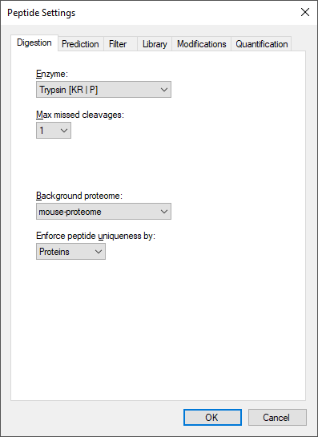
Prediction tab
Select the “Prediction” tab.
- Retention time predictor: A retention time predictor can be used to create scheduled methods and to support data
analysis.
- In this tutorial we don’t need any, hence we select “None”.
- Use measured retention times when present: If this option is selected we can use measured retention times (instead of
predicted) for the target peptides.
- Check this option.
- Time window: Enter the time window that you would like to use for your scheduled measurements.
- In this case we enter “5”.
The “Prediction” tab should look like this:
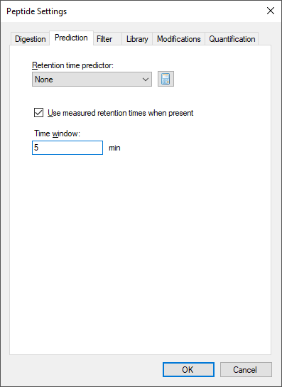
Filter tab
Select now the “Filter” tab. In this tab we can define filters to select peptides with certain properties.
- Min length/Max length: In here we can determine the minimal and maximal length of our target peptides.
- Set “Min length”: 7 “Max length”: 26.
- Exclude N-terminal amino acids: The N-terminus of a protein might be post-translationally processed (modified and/or
cleaved) and might thus not be suited for protein quantification.
- In our case we do not exclude N-terminal amino acids thus enter “0”.
- Exclude potential ragged ends: Ragged ends are peptides with KK, RR, RK or KR sequences at one or both ends. Such
peptides might not be fully cleaved and hence may not be suited for quantification. However, if no alternative peptides are available one
might rather quantify with a ragged end peptide then not at all.
- In our case we will not select this option.
- Exclude peptides containing: This option allows us to discard a priori peptides that based on its sequence would
undergo secondary reactions. “Cys, Met, His†These residues are prone to modifications, such as
oxidation. “NXT/NXS†This is a glycosylation motif. “RP/KP†Lys or Arg followed by Pro
are sometimes can be cleaved by trypsin.
- We are not going to use this option.
- Auto-select all matching peptides: When this option is activated peptides for target proteins are automatically selected
from a spectral library or from a background proteome file.
- Tick this box.
The “Filter” tab should look like this:
Library tab
Select now the “Library” tab. In this tab we can insert or build spectral libraries containing MS2 spectra. Spectral libraries can be
downloaded from public sources or built within Skyline from your own data. Several libraries can be selected at the same time. Be aware that
the order in the list matters: the higher up in the list, the higher the priority in case there is an MS2 spectrum for the same peptide in
more than one library.
In this tutorial, we will build a library from data obtained from a set of synthetic isotopically-labelled peptides that were bought to match
each endogenous peptide of interest that will be monitored in the samples. These heavy peptides were analysed in an LTQ Orbitrap Velos using a
CID method. To build the library we need the search engine output file and the raw data. In our case the search engine output file is in
pep.xml format and the raw data in the standard mzXML format.
- Click the button “Build”
- Give your library a name: “heavy”
- Specify the output path where your library should be saved. Click “Browse”. Place it in the Webinar17_data/Heavy Library folder.
- Do not activate the “Keep redundant library†option, as we would like to get for each peptide just the single best spectrum.
- Choose a false discovery rate of below 1%, which in our case is represented by a cut-off score of 0.9 (for a PeptideProphet posterior
error probability).
- The option “Include ambiguous matches†will consider multiple candidates for a single spectrum in case of ambiguity. We will not activate
this option.
- Leave the drop down menu “iRT standard peptides†blank as we are not going to use any iRT peptides in this tutorial.
- Click “Next†and “Add Files…†to choose the “heavy-01.pep.xml†and “heavy-02.pep.xml†files, located in the Webinar17_data/Heavy Library
folder and click “Open”.
- Click “Finish”
We will use a second library with shotgun data from the same samples that we will analyse using PRM. As the generation of this library takes
longer than the previous one we will upload the already generated library file. These data were acquired in an Orbitrap Fusion Lumos using an
HCD method. In the Library tab:
- Click the button “Edit List”
- In the “Edit Libraries†window click “Add”
- Give your library a name: “shotgun”
- Click “Browse”. Specify the path Webinar17_data/Shotgun Library where your library is located. Select the shotgun.blib file. Click “Open”.
- Uncheck “Use explicit peak bounds”.
- Click “OK”.
- Click “Up†to promote the “shotgun†library to being first.
- Click “OK”.
- Activate (check the box) of both libraries.
Tip! You can visualize and browse all peptides of your library in the spectral library viewer (View→Spectral Libraries).
Tip! Skyline supports supports building libraries from many peptide spectrum matching pipeline outputs. The list of supported
files can be found online:
https://skyline.ms/build-blib.url
Tip! In case you have more than one library, once we have a list of peptides uploaded, if both libraries contain an MS2
spectrum, at the top of the MS/MS spectrum tab you can select from the drop-down menu, which library spectrum you would like to see first.
Once the libraries are built, uploaded and activated, we can continue reviewing the other parameters in the “Library tab”.
- Pick peptide matching: Select if peptides should be automatically selected according to the filter settings
(defined in the Filter tab before) or according to the library settings defined below.
- For this study we will use all pre-selected targeted peptides that appear in the library. We keep the default setting (“Library”).
- Rank peptides by: Here you can define a ranking of all peptides available for a given protein in the library
based on peak intensities, number of spectra for a given peptide, or score for spectrum quality.
- For this study we will leave this option inactive.
- Limit peptides per protein: Limits the number of automatically selected peptides per protein from the library.
- For this study we do not need this setting.
Now the “Library” tab should look like this:
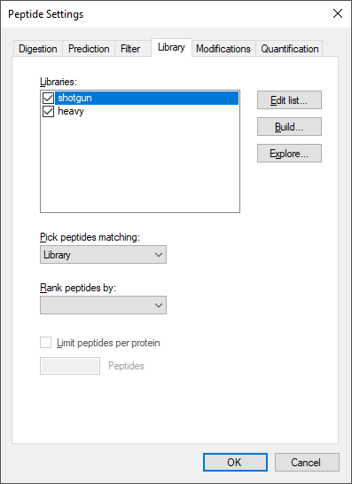
Modifications tab
Select now the “Modifications” tab.
- Structural modifications: Structural modifications concern chemical modifications of peptides. They can either be static
(always present) or variable (sometimes present, sometimes not). By default “Carbamidomethyl (C)” is activated, which comes from the
reduction and alkylation step during sample preparation to avoid formation of disulphide bonds between cysteine residues.
- Max variable mods and Max neutral losses: Select the maximal number of variable modifications and neutral losses
according to your project.
- Leave the default setting (3 variable modifications and 1 neutral loss).
- Isotope label type: Here you can define the isotope label type you plan to work with.
- Leave the default “heavy†as label type.
- Isotope modifications: Here you can define the chemical composition of your isotopic modification. To select the isotopic
modifications, click “Edit list” and “Add”. From the drop-down list, select the following isotopic moditications for our case study
(one-by-one) and click “ok†twice.
- Now in the list, activate (check):
- Label:13C(6)15N(2) (C-term K)
- Label:13C(6)15N(4) (C-term R)
- Internal standard type: Define which labelling state should be your internal standard.
- Our internal standard will be the spiked-in heavy reference peptides and we thus keep the default setting “heavy”.
Now the “Modifications” tab should look like this:
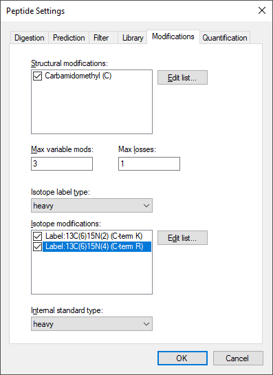
Tip! This tab might be slightly different in your case (you might have less or more modifications than the displayed in the
screenshot). You just need to make sure you select the indicated modifications. Click “OK”
Quantification tab
Open again the “Peptide Settings” and change to the “Quantification” tab.
In this tab one can define the parameters on how to use calibration curves for peptide quantitation.
-
- Regression fit: This option calculates a regression fit from consecutive standard dilutions to produce a
calibration curve for peptide quantitation. Options for the regression fit can be i)none, ii) linear, iii) linear through zero,
iv)bilinear, v) quadratic, and vi)linear in log space.
- Normalization Method: It allows the use of an internal heavy standard for intensity normalization.
- Select “Ratio to Heavy”
- Regression Weighting: It sets the regression weighting factor which can be i) none, ii) 1/x, or iii) 1/(x*x).
- MS Level: It determines whether peptide quantitation is performed at the MS1 or MS2 level.
- Units: In this box you can include the concentration or amount units of your standards.
Therefore, the quantitation tab provides us with different features to facilitate the peptide quantitation by PRM, SRM or MS1 acquisition
methods by the use of calibration curves which can be single point curves or multiple point calibration curves with a regression fit.
Later in this tutorial we will perform a single point calibration using a heavy-labeled internal standard by simply spiking a known amount of
heavy labeled peptide into our sample to quantify our endogenous proteins.
The “Quantification” tab should look like this:
Finally, click “OK†to confirm all peptide settings.
Transition settings
Now open the Transition Settings (under the menu “Settings”) and go through all tabs to adjust the settings for the current
project.
Prediction tab
Change to the “Prediction” tab.
- Precursor mass and Product ion mass: Here you define the basic MS parameters of your data.
- For both, precursor and product ion mass, we work with the monoisotopic mass.
- Collision energy: In our PRM experiment we do not use this option as the collision energy is calculated
by the instrument.
- Select “None”.
- Declustering potential: Define the declustering potential that should be applied to your sample when it is injected into
the mass spectrometer.
- We will not set a declustering potential. Select “None”.
- Optimization Library: Skyline can store the results of a collision energy optimization experiment into a library and
therefore, use the optimized values in future experiments.
- We are not using this option.
- Use optimization values when present: If you have carried out a collision energy optimisation experiment within Skyline,
you can directly apply the optimised values.
- We will not activate this option for now.
Now the “Prediction” tab should look like this:
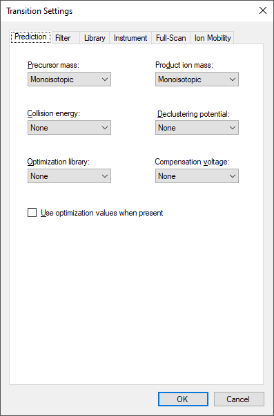
Filter tab
Change to the “Filter” tab.
- Precursor charges: Define which precursor charge states you would like to consider for your PRM measurements.
- We usually consider doubly and triply charged precursor ions, enter “2, 3”.
- Product ion charges: Define which product ion charge states you would like to consider for your SRM
measurements.
- We usually consider singly and doubly charged product ions, enter “1, 2”.
- Ion types: Define which product ion types you would like to consider for your PRM measurement (you can define a, b, c, x,
y, z and p ions, p stands for precursor).
- In this study we focus on y and b-ions, so enter “y, b”.
- Product ions: In this window, you can define a filter to automatically select transitions for all peptides in
your Skyline document. For example, to filter for the whole y-ion series, ranging from the first to the last y-ion of a peptide, enter:
From: “ion 1†and To: “last ion”. In our case study we want to consider all y and b-ions, hence we select From: “ion 1†To: “last ion”.
- Special ions: With this option, you can select other types of ions than the standard y or b like
immonium ions or iTRAQ/TMT reporter ions. Further criteria to automatically include typically very intense transitions, such as N-terminal
to Pro or C-terminal to Glu or Asp, can be selected or custom defined.
- Uncheck the default option “N-terminal to Proline†as we would like to select transitions based on a library spectrum only.
- Precursor m/z exclusion window: Here you can exclude a certain mass window around the precursor m/z value for
transition selection. In this m/z range transitions are typically very noisy and therefore not suited for identification and
quantification.
- Set the precursor exclusion window to “5†Th (which is ± 2.5 Th around the precursor).
- Auto-select all matching transitions: Needs to be activated if transitions should be automatically selected for all
peptides based either on the filter settings or the library.
- Activate.
Now the Filter tab should look like this:
Library tab
Change to the “Library” tab.
- Ion match tolerance: Here you can define the mass accuracy you would like to tolerate for the selection of fragment ions
from your spectral library. This depends on the instrument type that was used to acquire the library spectra. Lower values help to get a
more specific peak assignment of the spectra, but if the instrument did not have this accuracy you will lose your peaks.
- The MS2 spectra used to build the library have been acquired on an Orbitrap mass analyser for which we usually use a mass tolerance of
0.05 m/z.
- If a library spectrum is available, pick its most intense ions: Here you can specify if the library should be used to
guide transition selection and how many transitions per precursor should be considered.
- Activate and enter “10†product ions.
- Here you can also select the minimum product ions as “3”
Note: In PRM the number of selected transitions does not affect the cycle time because the MS2 data is acquired in full scan
mode, and therefore, the information of all the ions is available in the data. You can decide to extract more ions and later on select only
the most intense or the ones without interferences. In contrast, in SRM each transition “costs” a certain time (dwell time), and therefore one
needs to limit the number of transitions monitored within a method not to exceed a cycle time value that ranges from 1 to 3 seconds. For this
reason in SRM we limit the number of transitions extracted per peptide to 3-5.
- From filtered...: Here you can choose which settings from the “Filter†tab you would like to consider for the automatic
transition selection.
- Select “From filtered ion charges and types”.
Now the “Library” tab should look like this:
Instrument tab
Change to the “Instrument” tab.
- Specify the m/z range of your instrument or your acquired data.
- Min m/z: 340 m/z to Max m/z: 1200 m/z
- Dynamic min product m/z: This function is only useful for chromatograms from LTQ MS2 data. It allows to restrict
the product m/z values to being greater than a dynamic minimum, based on the precursor m/z, consistent with the limits the LTQ imposes.
- Do not activate this option.
- Method match tolerance: Here you can define the tolerance in mass difference between the theoretical masses
calculated by Skyline and the masses given in an imported raw file. Raw files acquired with methods generated with Skyline should have
differences of 0 between Skyline and raw file masses. However, if other mass calculators have been used for method generation minor mass
differences can occur.
- Leave the default setting of “0.055 m/z”.
- Firmware transition limit: In case your instrument of choice has a maximal transition number limit you can enter this
here.
- Do not enter a limit.
- Firmware inclusion limit: In case you use Skyline for inclusion list generation you can specify the list limit here.
- Do not enter a limit.
- Min time, Max time: Here you can limit the part of the HPLC gradient to extract data from (e.g. in SWATH
experiments).
- Leave these settings undefined.
Now the “Instrument” tab should look like this:
Full-Scan tab
Change to the “Full-scan” tab.
- MS1 filtering: We are not going to extract MS1 data in this tutorial so select “None†from the “Isotope peaks included”
drop-down menu.
- MS/MS filtering: On the “Acquisition Method†drop-down menu select “Targeted”. On the “Product mass analyser†drop-down
menu select “Centroided”. Set the “Mass Accuracy†to “10†ppm.
- Retention time filtering: Activate the “Include all matching scans†option.
Now the “Full-Scan” tab should look like this:
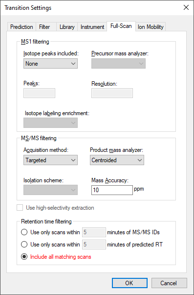
Ion mobility tab
- These options allow prediction of drift times when using ion mobility data.
- We are not using ion mobility data in this course and therefore we select “None”.
Save the Skyline document to Webinar17_data folder with the name PRM_Settings.sky
Prepare and export PRM method
After setting up all peptide and transition settings in the Skyline document, we will now generate a precursor list for the PRM measurements
and automatically select the best transitions for each peptide based on the information found in a spectral library.
Depending on the level of available information you can directly insert a transition list into Skyline (Edit🡪Insert🡪Transition list).
Similarly, if you just know your target proteins and their best representative peptides, you can insert peptide sequences
(Edit🡪Insert🡪Peptides). And finally, if you only have a number of target proteins, you can simply insert a protein list
(Edit🡪Insert🡪Proteins) and Skyline will automatically select peptides and transitions according to your settings.
In our case study we will monitor 19 target proteins, each represented by 1-3 proteotypic peptides (31 peptides in total). The optimal
proteotypic peptides have been selected based on previously acquired data.
Create a precursor list in Skyline
In order to insert the 31 target peptides into your Skyline document called PRM_Settings.sky, first open the target peptide list in Excel
(target_peptides.csv in folder Webinar17_data) and copy only the sequences in the “Peptide Modified Sequence” column.
In Skyline go to Edit🡪Insert🡪Peptides and press Ctrl-V to paste the peptide sequences.
- Skyline will search these peptides in the background proteome and automatically add the corresponding protein names.
- In case you add a peptide sequence which is not unique for a single protein Skyline will ask you how to proceed in these cases.
- To insert peptides carrying modifications you indicate these modifications in the peptide sequences using squared brackets containing the
mass difference. For example, peptides carrying carbamidomethylated cysteines are inserted as:
GVDC[+57]QEVSQEK.
Tip! You can also insert modifications in a particular sequence once the peptides are inserted in the Skyline file selecting
the peptide, right click and select “Modify”.
- Click the “Insert†button.
If all settings are setup correctly, Skyline will automatically insert the 31 target peptides under the correct protein name with selected
transitions according to the filter and library definition. In case the peptide was identified in the library with charge 2 and charge 3 both
options will appear (and each will have a light and heavy form.
In total you should end up with a document containing (see lower right corner):
19 proteins, 31 peptides, 106 precursors and 896 transitions
To see all selected transitions at once go to Edit🡪Expand All🡪Precursors. These “Collapse/Expand all” functions are very useful to quickly
change views for all proteins/peptides/precursors.
Tip! Hover with the cursor over the protein/peptide/precursor/transition to get specific information on the respective item.
Tip! The numbers in the square brackets behind the peptide sequence indicate the position of the peptide in the protein.
Tip! Right-click on protein/peptide/precursor to see several options for refining and/or modifying. If you select “Pick
Children” on either level, you can add or remove selected peptides per protein, precursor charge states/isotypes per peptide, and transitions
per precursor. Click on the funnel icon to see all options.
Tip! For each target peptide you can view the corresponding MS2 spectrum of the library via the MS/MS Spectrum tab (usually by
default visible, if not, go to View🡪Library Match). To select the ion type that you want to label in the MS2 spectrum right-click on the
spectrum and select any additional ion types you are interested in.
Save the Skyline file as PRM_Proteome.sky in Webinar17_data folder.
Your Skyline document should now look like this:
- Go through all target peptides and check the automatically selected transitions and the quality of the MS2 library spectra.
Export your list of precursors from Skyline as an acquisition method.
To create our PRM method on the instrument we need to generate a list of precursors to be fragmented. The list has to include the m/z of the
precursor, the z and a unique name. To generate the list we will generate a custom-defined report, will see another example of generating a
custom defined report later. To generate the precursor list follow the next steps:
To export your transition list to a file to generate the method in the mass spectrometer do:
- “File†🡪 “Export†🡪 “Report”
- The “Report†tab offers you a range of predefined report formats. Here we will generate our own report format: “Edit list†🡪 “Add...”
- An “Edit Report†window opens.
Note: For detailed information about all options see the Skyline tutorial “Skyline Custom Reports†on the Skyline website.
https://skyline.ms/tutorial_custom_reports.url
- Name the view “PRM_precursor_list”.
- From the selection tree on the left, expand “Proteins†→ “Peptides†→ ”Precursors†and select the following items:
- “Modified Sequence”
- “Precursor Mz”
- “Precursor Charge”
Your “Edit Report” tab should now look like this:
- Click “Preview†to check report appears with 106 rows (one for each precursor).
- Close the “Preview†window.
- Click “OK†twice
- Select the report name from your list.
- Click “Export†and save the report as a spreadsheet file in the Webinar17_data folder with the name PRM_precursor_list.csv.
Export your list of precursors from Skyline into a scheduled method
The term “scheduled PRM” refers to fragment the precursors not over the whole chromatographic gradient, but only for a short time window around
the peptide of interest expected retention time. Hereby the number of measurable precursors per PRM run can be significantly increased. The
more precise retention times of peptides can be predicted, the narrower a retention time window can be defined and the more peptides can be
measured in a single run without loss of sensitivity.
In this part of the tutorial we will learn how to generate a scheduled method using retention time information from previous experiments. We
will use the information of the retention time from a previous injection of our target peptides.
To import the information from the injection of peptides do:
- Go to “File†🡪 “Import†🡪 “Results†and:
- Select the “Add single-injection replicates in files†option.
- In the “Optimizing†drop-down menu select “None”
- In The “Files to import simultaneously†drop-down menu select “Many
- Click the “Show chromatograms during import†option
- Click OK.
- Select the file heavy-PRM.mzXML in Webinar17_data/PRM data/Standards folder.
- Click “Open”.
Now we have measurements of the retention time of the targeted peptides. In peptides with 2 precursors in the library (charge +2 and charge
+3), only one of the two precursors have been acquired.
- Remove the charge that has not been acquired with ”Refine”->”Remove Missing Results”.
- Go to “View†🡪 “Peak Areas”.
- Go to “View†🡪 “Retention Times”.
- Drag and drop the “Peak Areas†and “Retention Times†panes to place them beside the PRM chromatograms with “Peak Areas†above “Retention
Times”. Arrange the library pane below the targets pane.
The Skyline Window should look like this:
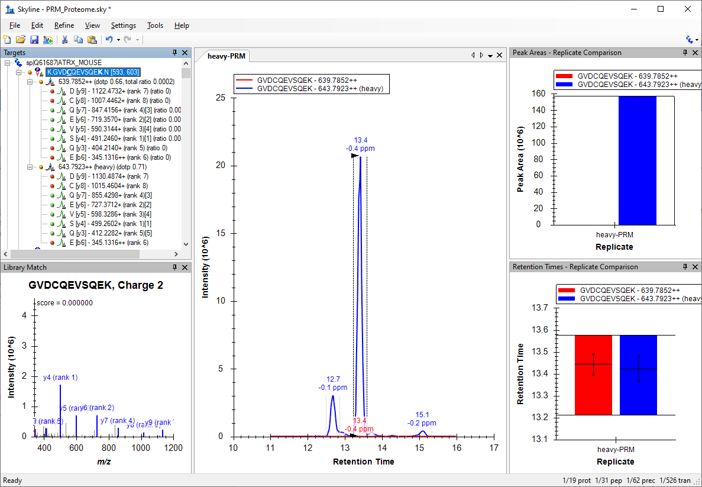
The document should now contain 62 precursors (two per peptide, one for the light version and one for the heavy version).
- “Edit†🡪 “Collapse All†🡪 “Peptides”
- Check that all the signals from the peptides are integrated correctly. Focus only on the heavy signal of the peptide as in many cases the
light signal is very low or undetectable.
Save the Skyline file in Webinar17_data folder as PRM_Scheduled.sky
Now that you have information about retention time, Skyline will assign retention times to all target peptides defined in your document.
Skyline provides a graphical view showing the number of concurrent precursors, which will be concurrently measured depending on the selected
retention time window size. To show this graph go to:
- “View†🡪 “Retention times†🡪 “Scheduling”
- It will appear on top of the “Retention Times – Replicate Comparison†graph. So, click and drag the tab labeled “Retention Times –
Scheduling†to float the graph above the Skyline main window.
- Right-click on the graph and select “Properties...†to add more time windows, for example: “1, 2, 5, 10†minutes. Explore the effect of
the window size onto the number of concurrent precursors.
Note: The size of the window that you finally will select in your instrument depends on different factors like the
reproducibility of your chromatography, the number of concurrent transitions and the resolution that you use to acquire your data (higher
resolutions require longer acquisition times). Your goal has to be to obtain a maximum cycle time that is compatible with a good quantitation
(at least 8-10 points per chromatographic peak).
- To generate the list go to “File†🡪 “Export†🡪 ”Report”.
- Click “Edit List”. Select the “PRM_precursor_list†view.
- Click “Edit”.
- Change the view name to “PRM_precursor_list_scheduled”
- Add the “Peptide Retention Time†field in “Proteins → Peptides → Peptide Results → Peptide Retention Time.
Tip! You can click the binoculars button ( ) above “Report Name†to find any field by name.
) above “Report Name†to find any field by name.
- Click “Preview†to check report appears with 62 rows with each retention time appearing twice, once for the light and heavy precursor of
each peptide.
- Close the “Preview†window.
- Click “OK†twice
- Select the “PRM_precursor_list_scheduled†view.
- Click “Export†and save the report as a spreadsheet file in the Webinar17_data folder with the name PRM_precursor_list.csv and open it in
Excel.
Tip! You can use “File†🡪 “Open containing folder†to open a File Explorer window on the folder containing the Skyline file.
To set up the method in the Fusion Lumos we need to set the start and end retention time in which we will monitor every target.
- Modify the PRM_precursor_list_scheduled.csv to include these new columns and change the headers of the columns to make them compatible
with the Fusion Lumos Method Editor (see below).
- Save the file as PRM_mass_list.csv.
Your precursor list should now look like this:
- Close the “Retention Times – Scheduling†window.
- Save the Skyline session.
Tip! Sometimes is useful to be able to remove the light versions of each target peptide, you could do it by:
- Go to “Refine†🡪 “Advanced”.
- Remove label-type “light”.
- Click “OK”.
- To recover the information from the light peptides. Go to “Refine†🡪 “Advanced”. Tick the “Add†box and select “light†as label type.
Parallel reaction monitoring data analysis
After the generation of a precursor list and the acquisition of data using parallel reaction monitoring (PRM) we will perform the data analysis
of the acquired dataset. Skyline offers a useful graphical interface that allows for a fast and straightforward peak intensity and retention
time comparison over many samples.
The cell cycle murine fibroblast samples were digested with trypsin and then, a mixture of 31 isotopically-labelled peptides with
13C615N2-Lysine and 13C615N4-Arginine—one for each peptide of interest—was spiked into the tryptic
digest. We will use these heavy-labelled peptides as an internal standard to identify and quantify the 19 proteins of interest in three
replicates (see table in Appendix 1). Moreover, we will use these internal standards to determine the amount of endogenous proteins in our
sample.
Importing data results into Skyline
- Remove the run from the heavy peptides. “Edit†🡪 ”Manage Results†select “heavy-PRM”, click “Remove”, click “OK”.
- Import the target runs: “File†🡪 “Import†🡪 “Results†🡪 “Add single replicate per file†🡪 “OK”. Leave the rest of parameters as
default
- Select all nine .mzXML files in Webinar17_data/PRM data/Samples and select “Open”.
- Activate the peak area and retention time view (if not already there):
- “View†🡪 “Retention times†🡪 “Replicate comparison”
- “View†🡪 “Peak areas†🡪 “Replicate comparison
- Go to “Settings†and activate “Integrate all†to ensure that always all transitions between the boundaries of the most intense
transition are integrated.
- Go to “View†🡪 “Arrange graphs†🡪 “Tiled”, now you see all the imported PRM runs at once.
There are different options to arrange your graphs and everyone should choose whatever is most convenient for him/her. For now, arrange the
three different states in three windows and sort the three replicates in tabs.
In order to do so:
- Go to “View†🡪 “Arrange graphs†🡪 “Grouped”
- Group panes: “3”
- Distribute graphs among groups
- Display: “Row”
- Sort order: “Document”
- OK.
Your Skyline document should now look like this:
In this view you can visualize together the heavy and the light traces. This layout is good to check the peak integration.
- Right-click in a chromatogram graph and click “Legend†(to remove the repeated legend).
- Right-click in the Peak Areas – Replicate Comparison graph and click “Legend”.
- “View†🡪 “Transitions†🡪 ”Split Graph†to view the heavy and the light signals in different graph panes.
- “View†🡪 Auto-Zoom 🡪 Best Peak (F11)
The Skyline main window should look something like this:
This layout is good to check interferences in individual transitions.
To further aid manual peak picking you can:
- Right-click the Peak Areas graph 🡪 Normalize To 🡪Total
- Edit 🡪 Expand All Peptides 🡪 Precursors
- Select the first precursor.
The Skyline main window should look something like this:
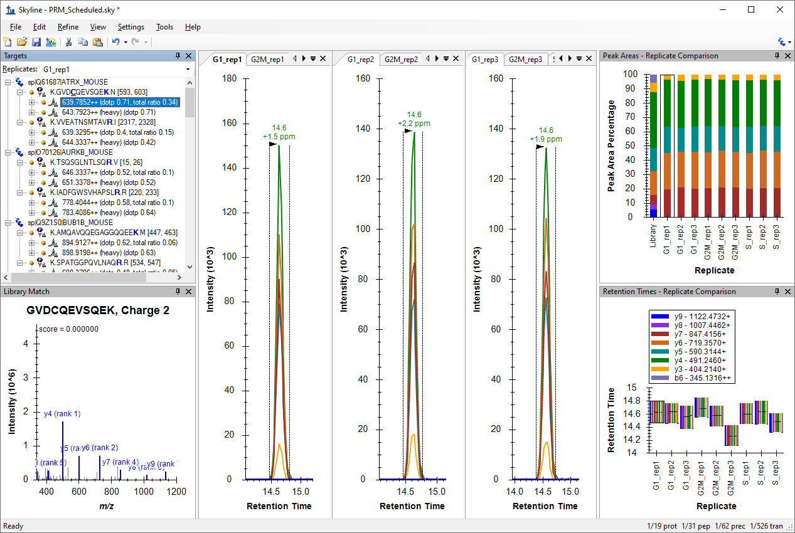
Manual exploration and refinement of the picked PRM chromatograms
Inspect the signals of the 31 target peptides over all 9 runs. We recommend to do this process in two steps: in a first round just refine the
peak picking (A), and in a second round refine the transitions for quantification (B).
Peak picking (identification)
For correct peak picking and therefore, peptide identification, one needs as many co-eluting sequence information ions as possible that
correlate in intensity with a reference peptide. The reference peptide can be either the heavy-labelled internal standard or the reference
library.
We have selected our transitions based in the information found in the libraries. One of the libraries (“heavy”) was acquired in another
instrument using a different type of fragmentation (LTQ-OT-Velos, CID) than the ones used in the PRM acquisition (Lumos, HCD). For this
reason, the correlation between the intensities of the fragment ions in the library and in the acquired data (dotp) is not very high in some
cases and sometimes transitions selected from the library are not detected in the data.
- Remove the non-observed transitions. In order to simultaneously delete transitions in the light and in the heavy precursor, select one
sequence, right click 🡪 “Pick Children”, remove the unwanted transitions and tick the box “Synchronize isotope label types”.
- For example in the first peptide GVDCQEVSQEK remove y9, y8 and b6 ions.
You should do the same for all 31 peptides.
Tip! A quicker way to remove most of the things in your document marked with a red dot () is to:
- “Refine†🡪 “Advanced†– “Results†tab
- Min peak found ratio: - “0.5”
- OK
(Note: This uses the signal across all replicates. So, transitions with red dots in less than half the data will not be removed. You can use
“0.3” if you want to make that less than one third.)
Now in the interest of time use the above technique to reduce the chosen transitions to only the ones reliably detecting signal.
If you want to continue the exercise by yourself later:
Take note of criteria such as: Co-eluting fragments, Peak shapes, Library corelation (dotp, but keep in mind in this case the library was
generated by a different instrument), Correlation with the heavy peptide/fragments, Correlation with replicates (both in terms of fragment
relative intensity and retention times)
-
- Check that all peptides are picked correctly by Skyline and the peak boundaries set appropriately. In the peptide retention time
replicate view all peptide bars should have approximately the same height. If certain precursors were not picked correctly, drag
the area boundaries to what you think is the right peak.
- Sometimes peptides are not detectable in some biological states. In this case you have the reference of the heavy peptide to integrate the
peaks. Even if you do not detect any endogen signal, integrate the noise using as reference the heavy standard. This will give you a final
results matrix without missing values.
Save the Skyline file in Webinar17_data folder as PRM_Picked.sky when you are sure that all peaks are picked
correctly.
Transition refinement (quantification)
In contrast, for peptide quantitation one requires transitions with a good signal-to-noise ratio, which are free of interferences. In an
extreme case, one could use several transitions for peptide identification, and only the most intense for peptide quantitation.
-
- Check if all transitions of good quality and reproducible over the samples. The relative transition intensity has to be constant
over all runs. To visualise this, right-click on the “Peak Areas” window and select “Normalized To” 🡪 “Total”, as instructed
above.
- If certain transitions/precursors/peptides are of low quality (low intense, not co-eluting with the other transitions, shouldered,
etc.) or irreproducible over runs, remove them from the document by deleting them from the “Targets” (transition tree) window.
Tip! You can bring back deleted transitions/precursors/peptides by right-clicking on the respective parent/item 🡪 “Pick
children”.
Tip! You can select transitions as quantitative: Right-click on a transition 🡪 “Quantitative”
- Check for example peptide EAGNINQSLLTLGR (use “Edit†🡪 “Find”): b4 has a big interference in the light precursor of the peptide so delete
this transition and Skyline will automatically remove it from the heavy precursor.
You should do the same for all 31 peptides.
Now in the interest of time we will continue with this tutorial after deleting the most extreme example explained above.
If you want to continue the exercise by yourself later, review all the peptides and delete (or mark as non-quantitative) low quality
transitions.
Save the refined file as PRM_Refined.sky
Protein quantitation using single point calibration
Once all the data has been reviewed and properly refined, we will use Skyline to quantify the proteins of interest in our samples.
- Go to “View†→ “Document Grid”.
- In the Document Grid window: Go to “Reports†→ “Peptide Ratio Results”.
We have a table with the ratio light-to-heavy (“Ratio To Standard”) for each peptide in each replicate. The Quantification shows the same value
in scientific notation preceded by “Normalized Area: “.
Note: In case the columns that are shown in your “Peptide Ratio Results†view are the same as the shown in the screenshot.
They are the Skyline defaults for this custom report. You can modify the columns in this report by clicking “Reports” 🡪 “Edit Report”. In the
“Customize Report” window, you can add and remove columns to your report as desired. You can click on the upper right “X” to
remove columns and on the arrows to change the order of the columns.
Now we are going to introduce the known amount of our internal standard to help Skyline calculate a more interesting quantitative value. In the
Document Grid window:
- Go to “Reports†→ “Peptide Quantification”
In the Internal Standard Concentration column, add the known amount of fmol for each heavy labeled peptide.
- You should be able to copy and paste from the concentration column in the Appendix 1 table at the end of this tutorial by
selecting the cell in the top row of this column and pressing Ctrl-V.
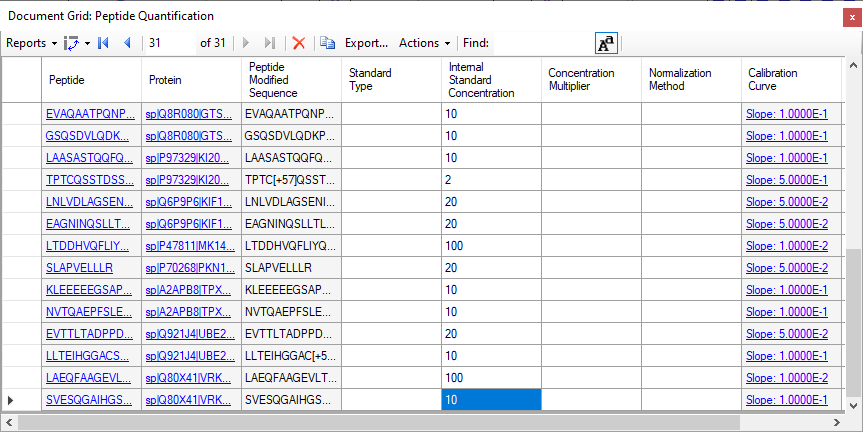
Now, again from the “Document Grid” window
- Go to “Reports†🡪 “Peptide Ratio Results”.
Now, in the quantification column you have the amount of each endogenous peptide, in fmol units, calculated with the single
point calibration method.

Statistical comparison between conditions
Annotating samples with group information
To perform statistical analysis of the results we first need to annotate which samples are replicates. Skyline allows you to associate
additional information with the runs in the document by defining custom annotations.
To view the Annotation Settings form, perform the following steps:
- “Settings†→ “Document Settings”.
- In the “Annotations†Tab click “Add”.
- Name the new “Annotation†as “Condition”
- Type: Value List
- Values: “G1”, “G2M”, “S”, each on a new line (without “ ”)
- Applies To: “Replicates”
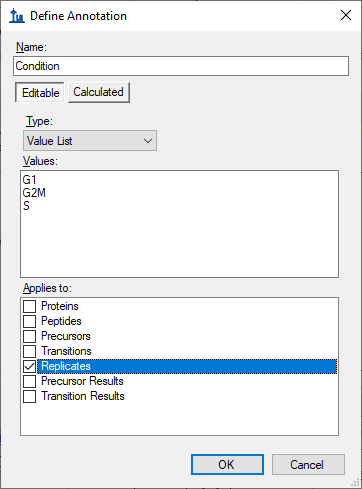
- Click “OK”.
- Generate another “Annotation†named “BioReplicate†following the same steps as above.
- Name the new “Annotation†as “BioReplicate”
- Type: Number
- Applies To: “Replicates”
- Click the “OK†button.
- Select both “Annotations†in the “Annotations†tab.
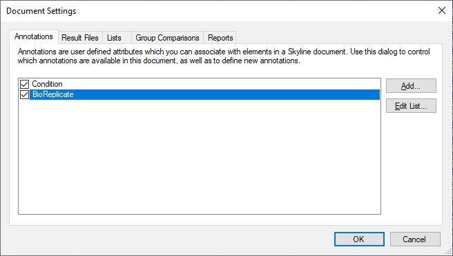
- Click the “OK†button.
Editing the annotation values in Skyline is done using the “Document Grid”.
- In the Document Grid, go to “Reports†→ ”Replicates”
- Annotate “Condition”, “BioReplicate†as shown in the table below.
Tip! You can use your keyboard to type directly into the Document Grid, using Enter to move to the next line, Tab to the next column,
F2 to enter cell edit mode, up and down arrows to select from a Value List once in cell edit mode, and arrow keys to navigate the grid
when not in cell edit mode, all just like in Excel.
Now you can group the data based on “Condition†or “BioReplicate”.
- Right-click on “Retention Time – Replicate Comparison†or “Peak Area – Replicate Comparison†window → “Group by†→
“Condition†(or “BioReplicate”).
- “View†→ “Transitions†→ “Split Graph†to uncheck this option.
The Peak Areas and Retention Times - Replicate Comparison graphs should like this for the first peptide in the list
(K.GVDCQEVSQEK.N [593, 603]):
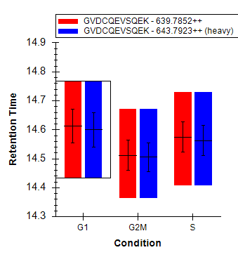
Save the Skyline file as PRM_Annotated.sky in the Webinar17_data folder.
Group Comparison in Skyline
Skyline can perform pairwise group comparisons of peptide and protein peak areas. The comparisons are performed by i) considering all the
available transition peak areas for a peptide or protein, ii) optionally dividing by a normalization standard, iii) taking the log, iv)
averaging any technical replicates and v) performing a t-test on the resulting values.
Skyline automatically discards replicates with missing values.
To perform the group comparisons follow the next steps:
- Go to “Settings†→ “Document Settings”
- Go to the “Group Comparisons†tab and Click the “Add†button.
- In the Name field of the Edit Group Comparison form, enter “G2M-vs-G1”.
- For the Control group annotations choose “Condition”.
- For the Control group value choose “G1”.
- For the Value to compare against choose “G2M”.
- For the Identity annotation choose “BioReplicate”.
- For the Normalization method choose “Ratio to Heavy”.
- In the Confidence level field, enter “95†%.
- For Scope choose Protein.
- Click the “Advanced†tab and select “Tukey’s Median Polish†in the drop down menu of the “Summary Method”
The “Edit Group Comparison” form should look like this:
- Click the “OK†button.
- Click the “Edit List†button.
- Click the “Copy†botton.
- In the Name field of the Edit Group Comparison form, enter “S-vs-G1”.
- For the Value to compare against choose “S”.
The second group comparison should look like this:
- Click the “OK†button.
- Make sure both of your new group comparisons are checked.
- Click the “OK†button.
To inspect the group comparison you just defined do the following:
- “View†→ “Other Grids†→ “Group Comparisons†→ “G2M-vs-G1†or “S-vs-G1”.
Skyline will show a grid view that looks like this:
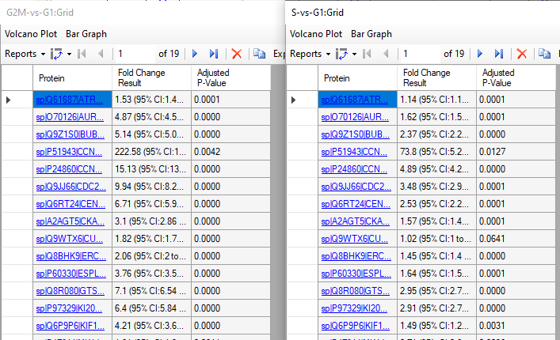
Be aware that numbers can be different in your document depending on which peptides/transitions you have selected for the refined file.
In the “G2M-vs-G1” comparison:
- Click the “Bar Graph†button in the menu above the toolbar in the grid view.
Skyline adds a graph pane to the view that looks like this:
- On the grid, click the “Fold Change Result†header, and click Sort Ascending in the menu that appears.
This will sort the grid, and the graph like this:
Save the Skyline file as PRM_ttest.sky in Webinar17_data folder.
Export a custom-defined report
Skyline allows you to export from the Skyline document to a .csv file many values and statistics that can be used for further processing in
other tools like Excel or R. The Skyline Results and Document Grids provide access to many of these values and allow you to edit custom
annotations as you work with your data.
We saw an example of a custom report before and now we will generate a report with some quantitative data to further illustrate how to use this
Skyline feature.
Note: For detailed information about all options see the Skyline tutorial “Skyline Custom Reports†on the Skyline website.
https://skyline.ms/tutorial_custom_reports.url
To generate the report for this tutorial do the following:
-
- “File†🡪 “Export†🡪 “Report”
- The “Report†tab offers you a range of predefined report formats. Here we will generate our own report format: “Edit list†🡪
“Add...”
- An “Edit Report†window opens.
- Name the report “PRM-Quant”. From the selection tree on the left, select the following items:
- “Protein Name†(“Proteins†→ “Protein Name”)
- “Peptide Modified Sequence†(“Proteins†→ “Peptides†→ “Peptide Modified Sequence”)
- “Ratio To Standard†(Peptide area ratio of light to heavy; sum of all transition areas) (“Proteins†→
“Peptides†→ “Peptide Results†→ “Ratio To Standard”)
- “Calculated Concentration†(“Proteins†→ “Peptides†→ “Peptide Results†→ “Quantification†→ “Calculated
Concentration”)
- Add a check mark to “Pivot Replicate Name†in the bottom of the window.
Your Edit Report tab should now look like this:
- Click “Preview†to check report appears with 31 rows, and the last 2 columns pivoted by replicate name.
- Close the “Preview†window.
- Click “OK†twice.
- Select the new PRM-Quant report.
- Click “Export†and save the report as a spreadsheet file in the Webinar17_data folder with the name PRM-Quant.csv
In case you want your new report to be saved to the document, so that it will be available in whatever installation of Skyline opens it next,
you can do the following.
- “Settings†→ “Document Settings”.
- Go to the “Reports†tab and check the “PRM-Quant†report in the list.
- Click “OK”.
Save your Skyline session. The next time anyone opens the .sky file you saved, they will also get the “PRM-Quant†report.
Bibliography
- “Skyline Processing Grouped Study Data†Tutorial from the Skyline website.
- “Skyline Custom and Live Reports†Tutorial from the Skyline website.
Appendix 1
List of the spiked amounts of the 31
isotopically-labelled peptides used in this study
| Accesion |
Gene |
Sequence |
fmol/ïl |
| Q61687 |
ATRX |
GVDCQEVSQEK |
10 |
| Q61687 |
ATRX |
VVEATNSMTAVR |
10 |
| O70126 |
AURKB |
TSQSGLNTLSQR |
10 |
| O70126 |
AURKB |
IADFGWSVHAPSLR |
20 |
| Q9Z1S0 |
BUB1B |
AMQAVQQEGAGGQQEEK |
10 |
| Q9Z1S0 |
BUB1B |
SPATGGPQVLNAQR |
10 |
| P51943 |
CCNA2 |
DAGSALLSLHQEDQENVNPEK |
10 |
| P24860 |
CCNB1 |
QLEEEQSVRPK |
2 |
| Q9JJ66 |
CDC20 |
LSGKPQNAPEGYQNR |
2 |
| Q6RT24 |
CENPE |
GSISENEAQGASTQDTAK |
2 |
| A2AGT5 |
CKAP5 |
FIQPNIGELPTALK |
100 |
| A2AGT5 |
CKAP5 |
LDDIFEPVLIPEPK |
20 |
| Q9WTX6 |
CUL1 |
FYTQQWEDYR |
10 |
| Q9WTX6 |
CUL1 |
ESFESQFLADTER |
20 |
| Q8BHK9 |
ERC6L |
SPLAELGVLK |
10 |
| Q8BHK9 |
ERC6L |
ASLGPNLDLQDSVVLYHR |
20 |
| P60330 |
ESPL1 |
AQGLDLLQAVLTR |
20 |
| Q8R080 |
GTSE1 |
EVAQAATPQNPVNQGK |
10 |
| Q8R080 |
GTSE1 |
GSQSDVLQDKPSTAPDAASR |
10 |
| P97329 |
KI20A |
LAASASTQQFQEVK |
10 |
| P97329 |
KI20A |
TPTCQSSTDSSPYAR |
2 |
| Q6P9P6 |
KIF11 |
LNLVDLAGSENIGR |
20 |
| Q6P9P6 |
KIF11 |
EAGNINQSLLTLGR |
20 |
| P47811 |
MK14 |
LTDDHVQFLIYQILR |
100 |
| P70268 |
PKN1 |
SLAPVELLLR |
20 |
| A2APB8 |
TPX2 |
KLEEEEEGSAPATSR |
10 |
| A2APB8 |
TPX2 |
NVTQAEPFSLETDK |
10 |
| Q921J4 |
UBE2S |
EVTTLTADPPDGIK |
20 |
| Q921J4 |
UBE2S |
LLTEIHGGACSTSSGR |
10 |
| Q80X41 |
VRK1 |
LAEQFAAGEVLTDMSR |
100 |
| Q80X41 |
VRK1 |
SVESQGAIHGSMSQPAAGCSSSDSSR |
10 |